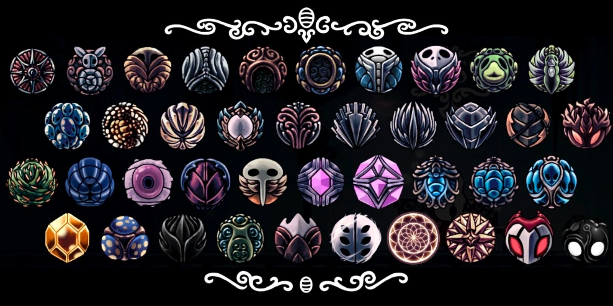

Amuletos
Amuletos são artefatos especiais em Hollow Knight que concedem ao Cavaleiro habilidades e bônus únicos. Cada amuleto custa um certo número de "entalhes" para ser equipado, forçando o jogador a escolher combinações estratégicas.
| Imagem | Nome | Custo | Descrição (O que faz) | Localização (Onde pegar) |
|---|---|---|---|---|
| Bússola Caprichosa | 1 | Mostra a localização do Cavaleiro no mapa. | Comprado de Iselda em Dirtmouth por 220 Geo. | |
| Enxame de Colecionadores | 1 | Um enxame segue o Cavaleiro e coleta Geo largado. | Comprado de Sly em Dirtmouth por 300 Geo. | |
| Casco Vigoroso | 2 | Aumenta o tempo de invencibilidade após sofrer dano. | Comprado de Sly em Dirtmouth por 200 Geo. | |
| Alma do Tolo | 2 | Aumenta a quantidade de Alma recebida ao acertar inimigos. | Comprado de Salubra por 100 Geo. | |
| Pedra Xamã | 3 | Aumenta o poder (dano e tamanho) das magias. | Comprado de Salubra por 220 Geo. | |
| Mestre das Almas | 4 | Aumenta muito a quantidade de Alma recebida ao acertar inimigos. | Comprado de Salubra por 550 Geo (requer 10 amuletos). | |
| Mestre da Esquiva | 2 | Permite esquivar (correr) para baixo e reinicia a corrida no ar. | Comprado de Sly após entregar o Brasão do Mestre. | |
| Mestre da Corrida | 1 | Permite correr mais rápido. | Comprado de Sly após entregar o Brasão do Mestre. | |
| Canção das Larvas | 1 | Ganha Alma ao sofrer dano. | Recompensa do Pai Larva após resgatar 10 Larvas. | |
| Elegia da Larvamosca | 3 | Dispara um feixe de energia do ferrão quando o Cavaleiro está com a vida cheia. | Recompensa do Pai Larva após resgatar todas as 46 Larvas. | |
| Coração Frágil | 2 | Aumenta a vida em 2 máscaras. Quebra ao morrer. | Comprado de Devorador de Pernas nos Ermos Fúngicos. | |
| Ganância Frágil | 2 | Aumenta a quantidade de Geo coletada. Quebra ao morrer. | Comprado de Devorador de Pernas nos Ermos Fúngicos. | |
| Força Frágil | 3 | Aumenta o dano do ferrão. Quebra ao morrer. | Comprado de Devorador de Pernas nos Ermos Fúngicos. | |
| Distintivo da Magia | 2 | Reduz o custo de Alma das magias. | Encontrado na Encruzilhada Esquecida, em um santuário de caracóis. | |
| Corpo Firme | 1 | Impede que o Cavaleiro seja jogado para trás ao acertar inimigos. | Comprado de Salubra por 120 Geo. | |
| Golpe Pesado | 2 | Aumenta a força com que os inimigos são jogados para trás. | Comprado de Sly em Dirtmouth por 350 Geo. | |
| Corte Rápido | 3 | Aumenta a velocidade de ataque do ferrão. | Encontrado na Beira do Reino, em um túnel escondido. | |
| Ferrão Longo | 2 | Aumenta levemente o alcance do ferrão. | Comprado de Salubra por 300 Geo. | |
| Marca de Orgulho | 3 | Aumenta muito o alcance do ferrão. | Recompensa por derrotar os Lordes Louva-a-Deus (Ermos Fúngicos). | |
| Fúria dos Caídos | 2 | Aumenta o dano do ferrão quando o Cavaleiro está com 1 de vida. | Encontrado na Passagem do Rei (King's Pass), área inicial. | |
| Invólucro de Espinhos | 1 | Emite espinhos que causam dano ao sofrer dano. | Encontrado no Caminho Verde, em uma área de vinhas. | |
| Carapaça de Baldur | 2 | Cria uma carapaça protetora ao focar Alma (curar). | Encontrado em um baú no Caminho Verde (área sudeste). | |
| Ninhada de Flukes | 2 | Transforma a magia Espírito Vingativo em um enxame de Flukes. | Recompensa por derrotar a Mãe dos Flukes (Hidrovia Real). | |
| Bênção do Defensor | 1 | Emite um cheiro heroico (e venenoso) que causa dano a inimigos próximos. | Recompensa por derrotar o Defensor do Esterco. | |
| Ventre Brilhante | 2 | Gera filhotes que atacam inimigos, consumindo Alma. | Encontrado na Encruzilhada Esquecida, em uma sala com um "fóssil". | |
| Foco Rápido | 3 | Aumenta a velocidade de focar Alma (curar). | Comprado de Salubra por 800 Geo. | |
| Foco Profundo | 4 | Dobra a quantidade de vida curada, mas torna a cura muito mais lenta. | Encontrado no Pico de Cristal, em uma área escondida. | |
| Coração de Sangue Vital | 2 | Adiciona 2 máscaras azuis de Sangue Vital. | Comprado de Salubra por 250 Geo. | |
| Casulo de Vida | 3 | Adiciona 4 máscaras azuis de Sangue Vital. | Encontrado no Abismo, em uma porta que requer 15 Sangues Vitais. | |
| Bênção de Joni | 4 | Transforma todas as máscaras de vida em Sangue Vital (não pode curar). | Encontrado no Túmulo de Joni (Penhascos Uivantes). | |
| Sangue da Colmeia | 4 | Regenera lentamente a última máscara de vida perdida (apenas máscaras normais). | Recompensa por derrotar o Cavaleiro da Colmeia (A Colmeia). | |
| Cogumelo com Esporos | 1 | Libera uma nuvem de esporos venenosos ao focar Alma (curar). | Encontrado nos Ermos Fúngicos (requer Amuleto do Defensor). | |
| Sombra Afiada | 2 | Aumenta o alcance da esquiva (Manto Sombrio) e causa dano ao atravessar inimigos. | Encontrado em Ninho Profundo, atrás de um Portão Sombrio. | |
| Forma de Unn | 2 | Permite se mover (como uma lesma) enquanto foca Alma (cura). | Encontrado no Lago de Unn (Caminho Verde), requer Lágrima de Isma. | |
| Glória do Mestre do Ferrão | 1 | Reduz o tempo de carregamento das Artes do Ferrão. | Recompensa de Sly após aprender todas as 3 Artes do Ferrão. | |
| Canção de Tecelã | 2 | Gera 3 pequenas tecelãs que atacam inimigos e coletam Alma. | Encontrado no Covil da Tecelã (Ninho Profundo). | |
| Portador dos Sonhos | 1 | Carrega o Ferrão dos Sonhos mais rápido e coleta mais Alma com ele. | Recompensa da Vidente ao coletar 500 Essências. | |
| Escudo dos Sonhos | 3 | Cria um escudo giratório que bloqueia projéteis e causa dano. | Encontrado na Terra do Repouso, em uma sala abaixo da Vidente. | |
| Bênção de Grimm | 2 | Um companheiro que ataca inimigos. Necessário para a DLC da Trupe Grimm. | Recebido de Grimm após invocar a Trupe. | |
| Melodia Despreocupada | 3 | Chance de bloquear dano (a chance aumenta a cada golpe sofrido). | Recebido de Nymm em Dirtmouth após banir a Trupe Grimm. | |
| Alma da Realeza | 5 | Gera Alma lentamente ao longo do tempo. (Metade da Dama Branca e Rei Pálido) | Obtido combinando as duas metades da Dama Branca e do Rei Pálido. | |
| Nascida-do-Vazio | 0 | Unifica o Vazio. Permite que a Sombra e os Irmãos ataquem passivamente. | Obtido no Abismo após transformar a Alma da Realeza. | |
| Força Inquebrável | 3 | Aumenta o dano do ferrão. Não quebra ao morrer. | Pagando 15.000 Geo para Divino (Trupe Grimm) com a Força Frágil. | |
| Coração Inquebrável | 2 | Aumenta a vida em 2 máscaras. Não quebra ao morrer. | Pagando 12.000 Geo para Divino (Trupe Grimm) com o Coração Frágil. | |
| Ganância Inquebrável | 2 | Aumenta a quantidade de Geo coletada. Não quebra ao morrer. | Pagando 9.000 Geo para Divino (Trupe Grimm) com a Ganância Frágil. | |
| Existem 40 amuletos no total para colecionar em Hallownest. | ||||